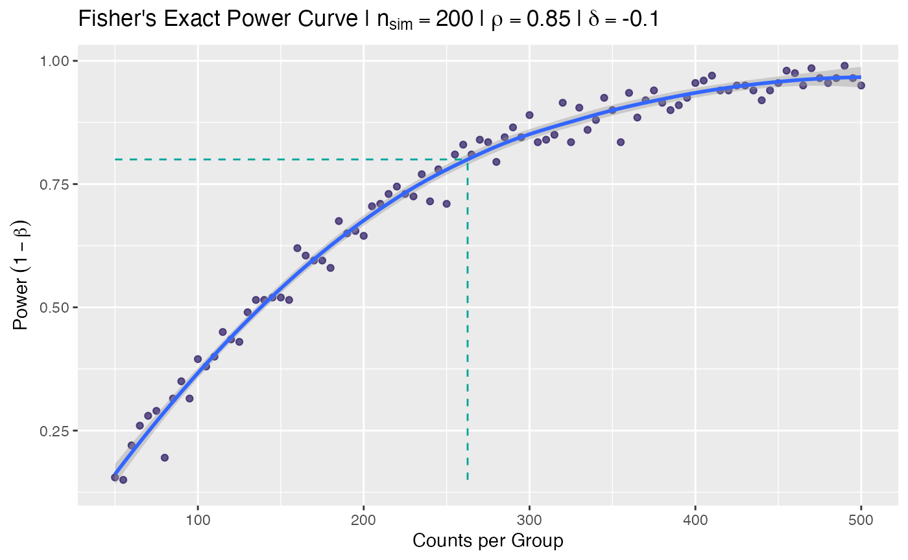

fisher-power-curve.RmdThis analysis concentrates on the power analysis and curve generation of the Fisher’s Exact test for count data. The test testing the null of independence of rows and columns in a contingency table with fixed margins.
In general, once you choose the proportion of the first group, counts
in column 1 of the 2x2 contingency table, you must then choose the
difference from that proportion for the second group to
determine the “effect” you are attempting to detect. Once chosen, you
can then generate a power curve, which varies the (paired) group size
and determines the power for a given effect size, proportion, and
significance level (default
).
Power is estimated via simulation whereby nsim simulations
are drawn from a rbinom() distribution with the specified
parameters
(,
,
,
)
and a call to fisher.test() determines the p-value. The
estimated power is the proportion of the simulated p-values
less than
given a known effect reflected in the 2x2 contingency
table.
There are 3 primary functions:
fisher_power(): calculates the simulated power for a
given set of parameters (p1, p2,
n1, n2) and number of simulations
(nsim)fisher_power_curve(): generates a power curve while
varying sample size on the x axis, and determining the
corresponding power through simulation using
fisher_power().
# example power calculation for single sample size `n`
# p1 = 0.85; p1 = 0.75
n <- 200
fisher_power(0.85, 0.75, n, n)
#> [1] 0.665Power curves are typically used to visualize the relationship between sample size and power. This can then be used to establish a reasonable sample size for a desired (80%?) power of the proposed experiment assuming an acceptable Type II error. (failing to detect an actual difference).
# create seq of `x` values for curve
nvec <- seq(50, 500, by = 5)
# simulate power for each `x`
power_tbl <- withr::with_seed(1, fisher_power_curve(nvec))
power_tbl
#> ── Fisher's Exact Power Curve Simulation ───────────────────────────────────────
#> • Sim table 91 x 2
#> • Sims per calculation 200
#> • p 0.85
#> • delta -0.1
#> • Varying n
#> • Sequence `n` 50, 55, 60, 65, 70, 75, 80, 85, 90, 95, 100, 105, 110, 115, 120, 125, 130, 135, 140, 145, 150, 155, 160, 165, 170, 175, 180, 185, 190, 195, 200, 205, 210, 215, 220, 225, 230, 235, 240, 245, 250, 255, 260, 265, 270, 275, 280, 285, 290, 295, 300, 305, 310, 315, 320, 325, 330, 335, 340, 345, 350, 355, 360, 365, 370, 375, 380, 385, 390, 395, 400, 405, 410, 415, 420, 425, 430, 435, 440, 445, 450, 455, 460, 465, 470, 475, 480, 485, 490, 495, 500
#> ════════════════════════════════════════════════════════════════════════════════As visualized above, a local polynomial fit can be easily fit to the
simulated power data varying with sample size to estimate the
relationship, and predict power from any arbitrary sample size
n.
fit <- loess(power ~ n, data = power_tbl)
fit
#> Call:
#> loess(formula = power ~ n, data = power_tbl)
#>
#> Number of Observations: 91
#> Equivalent Number of Parameters: 4.35
#> Residual Standard Error: 0.02705However, the inverse question is much more common … what sample size would be required to detect a specified difference (effect) a specified proportion (80%) of the time (i.e. power)?
The code below is a bit hacky, as inverting a polynomial can be
tricky, however, the approach is to define an objective function
fn() that uses the loess model fit to generate
predictions in y for given values of x
(power given n). Since we know the function is
monotonically increasing, we can threshold this objective function at
the specified power and use the optimize() function to
determine where in n the power is maximized.
This provides the sample size for a given power.
pwr_n <- solve_n(power_tbl, pwr = 0.8)
pwr_n
#> power n
#> 0.800 262.651Alternatively we can use the stats::approx() function to
linearly interpolate at a specified location in the y
variable to determine the corresponding x. The advantage
here is that approx() does not assume a monotonic response.
However, since we know the power curve is monotonically
increasing as it approaches
,
the results are highly similar.
n to Power Curve
gg +
annotate("segment",
x = c(pwr_n[["n"]], min(power_tbl$n)),
xend = c(pwr_n[["n"]],pwr_n[["n"]]),
y = c(min(power_tbl$power), pwr_n[["power"]]),
yend = c(pwr_n[["power"]], pwr_n[["power"]]),
linetype = "dashed", colour = "#00A499")
Extra code not used above but possibly useful in the future.
plot(power_tbl$n, power_tbl$power)
lines(power_tbl$n, predict(fit, data.frame(x = power_tbl$n)), col = "red")
# fit non-linear least squares (rather than loess)
nls_fit <- nls(
y ~ (x + b) / (x + a)^d,
start = list(a = 10, b = 1, d = 0.1),
data = data.frame(x = power_tbl$n, y = power_tbl$power)
)
plot(power_tbl$n, power_tbl$power)
lines(power_tbl$n, predict(nls_fit, data.frame(x = power_tbl$n)), col = "red")